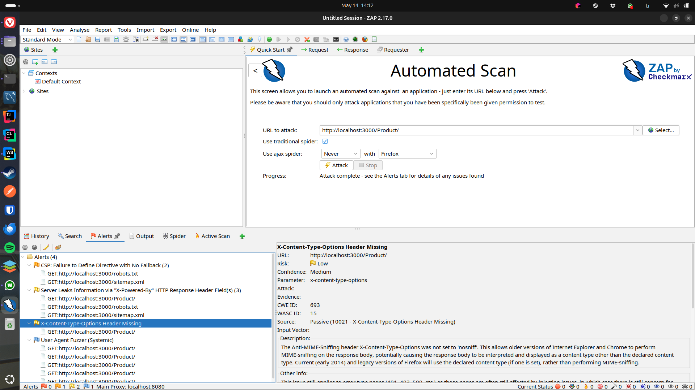

Prime Stack Test Execution Report
Team: Prime Stack
Application under test: Frost Inventory and Shopping System
Report date: 14 May 2026
1. Execution Summary
Testing was performed for the Frost Inventory and Shopping System in the local development environment. The testing effort included automated backend functional tests, Playwright UI/usability scenarios, k6 performance and security scripts, and an OWASP ZAP automated scan of the backend API.
Execution date for ZAP evidence: 14 May 2026.
2. Test Environment
| Item | Value |
|---|---|
| Backend | Express API on http://localhost:3000 |
| Frontend | Angular app on http://localhost:4200 |
| Database | MySQL database frost |
| Functional tools | Jest, Supertest |
| Frontend/usability tool | Playwright |
| Performance/security script tool | k6 |
| Security scanner | ZAP by Checkmarx 2.17.0 |
3. Execution Results by Test Type
| Test type | Planned | Executed / evidence | Result summary |
|---|---|---|---|
| Functional API tests | 36 | Test suites exist under backend/tests/functionality | Core user, product, supplier, and purchase workflows are covered |
| Frontend usability checks | 3 | Test suite exists at frontend/tests/example.spec.ts | Registration/login preparation, product browsing, and existing-user login are covered with screenshots |
| Performance tests | 6 | Script exists at backend/tests/performance/load-test.js | Thresholds defined: p(95)<500ms, error rate <10% |
| Security scripted tests | 7 | Script exists at backend/tests/performance/security-test.js | Injection, access control, mass assignment, XSS payload, and payload resilience are covered |
| ZAP scan | 1 scan | Evidence stored in docs/testing/evidence | 4 alert types were reported |
4. Functional Test Execution Notes
The backend tests are organized by module:
| Test file | Coverage |
|---|---|
backend/tests/functionality/user.test.js | Registration, login, duplicate email, missing fields, boundary validation, auth status |
backend/tests/functionality/product.test.js | Product list, details, creation, duplicate detection, lookup, amount update, deletion |
backend/tests/functionality/supplier.test.js | Supplier list, creation, duplicate detection, lookup, update, deletion |
backend/tests/functionality/purchase.test.js | Purchase list, creation, missing fields, user history, sorting, purchased products |
Current observation: DEF-001 has been fixed, but login failures still map to 500 in DEF-005. Purchase creation and purchase history also need attention because DEF-004 and DEF-002 affect purchase workflow reliability.
5. Frontend Usability Test Execution Notes
Frontend usability tests were written with Playwright. They cover:
- UT-001: New user registration/login preparation flow.
- UT-002: Product browsing/client dashboard flow.
- UT-003: Existing user login flow.
The Playwright tests save screenshots under frontend/tests/screenshots when they are run. These screenshots are not included as formal report evidence.
6. Performance Test Execution Notes
The k6 load test defines this load profile:
| Stage | Duration | Target virtual users |
|---|---|---|
| Normal load | 30 seconds | 5 |
| Load ramp | 1 minute | 20 |
| Stress | 30 seconds | 50 |
| Recovery | 30 seconds | 0 |
Performance acceptance thresholds:
- 95% of requests should complete in under 500 ms.
- Error rate should stay below 10%.
Endpoints included: /User/status, /Product/, /Product/getALL, /Supplier/, and /User/login.
7. Security Test Execution Notes
The scripted security test covers:
- SQL injection on login.
- XSS payload in registration username.
- Unauthenticated profile access.
- Mass assignment attempt using
role: "admin". - Oversized login payload.
- Unauthenticated access to
/User/users.
The expected behavior for /User/users is 401 Unauthorized, but the current route does not use authentication middleware. This is recorded as DEF-007. Mass assignment is recorded as DEF-006, and stored XSS input handling is recorded as DEF-008.
8. ZAP Scan Results
ZAP report details:
| Attribute | Value |
|---|---|
| Tool | ZAP by Checkmarx |
| Version | 2.17.0 |
| Generated | Thu 14 May 2026, 14:16:40 |
| Site | http://localhost:3000 |
| Evidence file | docs/testing/evidence/2026-05-14-ZAP-Secuirty-Report-.html |
ZAP alert summary:
| Alert | Risk | Confidence | URL | Evidence |
|---|---|---|---|---|
| CSP: Failure to Define Directive with No Fallback | Medium | High | GET http://localhost:3000/robots.txt | Content-Security-Policy: default-src 'none' missing frame-ancestors and form-action |
Server Leaks Information via X-Powered-By | Low | Medium | GET http://localhost:3000/robots.txt | X-Powered-By: Express |
X-Content-Type-Options Header Missing | Low | Medium | GET http://localhost:3000/Product/ | Missing X-Content-Type-Options: nosniff |
| User Agent Fuzzer | Informational | Medium | GET http://localhost:3000/Product/ | Response changed when using Mozilla/4.0 (compatible; MSIE 8.0; Windows NT 6.1) |
9. Confirmed Defects
| ID | Title | Severity | Status |
|---|---|---|---|
| DEF-001 | Missing fields return 500 instead of 400 | Medium | Fixed |
| DEF-002 | Template literal bug in getPurchaseByUserId | Medium | Open |
| DEF-003 | SupplierRoute POST has no error handling | Medium | Open |
| DEF-004 | Purchase create fails when userId is passed from test | High | Open |
| DEF-005 | Login route hardcodes status 500 | Medium | Open |
| DEF-006 | Mass assignment allows any user to register as admin | Critical | Open |
| DEF-007 | /User/users exposes all user data without authentication | High | Open |
| DEF-008 | XSS payload stored in database without sanitization | Medium | Open |
| DEF-009 | Missing security headers | Low | Open |
10. Overall Assessment
The application has meaningful automated coverage for core API and frontend component behavior. The main quality risks are concentrated in security hardening and API error semantics:
- Sensitive routes should consistently require authentication and role checks.
- Invalid client input should return 4xx responses instead of generic 500 errors.
- Public registration must not accept privileged fields such as
role. - User-controlled text should be validated or sanitized before storage/display.
- Security headers should be centralized with middleware.
- Express technology disclosure should be disabled.
11. Evidence List
| Evidence | File |
|---|---|
| ZAP full report | docs/testing/evidence/2026-05-14-ZAP-Secuirty-Report-.html |
| ZAP main screenshot | See image below |
| CSP screenshot | See image below |
| X-Powered-By screenshot | See image below |
| X-Content-Type-Options screenshot | See image below |
| User Agent Fuzzer screenshot | See image below |
| DEF-001 before/after images | docs/testing/evidence/def-doc/word/media/ |
